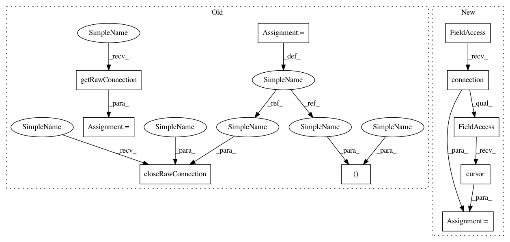

b2983c70694f3c516453257ac21ea2d819aae0b3,SecuML/experiments/Experiment.py,Experiment,_setAnnotationsFilename,#Experiment#Any#,244
Before Change
header = next(reader)
if len(header) == 3:
families = True
db, cursor = db_tools.getRawConnection()
if db_tools.isMysql():
query = "CREATE TEMPORARY TABLE labels_import("
query += "instance_id integer, "
query += "annotations_id integer DEFAULT " + \
str(self.annotations_id) + ", "
query += "user_instance_id integer, "
query += "label varchar(200), "
query += "family varchar(200) DEFAULT \"other\", "
query += "iteration integer DEFAULT 0, "
query += "method varchar(200) DEFAULT \"init\""
query += ");"
cursor.execute(query)
query = "LOAD DATA LOCAL INFILE \"" + filename + "\" "
query += "INTO TABLE " + "labels_import" + " "
query += "FIELDS TERMINATED BY \",\" "
query += "IGNORE 1 LINES "
if families:
query += "(user_instance_id, label, family) "
else:
query += "(user_instance_id, label) "
query += ""
cursor.execute(query)
query = "UPDATE labels_import l "
query += "JOIN instances i "
query += "ON i.user_instance_id = l.user_instance_id "
query += "AND i.dataset_id = " + str(self.dataset_id) + " "
query += "SET l.instance_id = i.id;"
cursor.execute(query)
query = "INSERT INTO annotations(instance_id,annotations_id,label,family,iteration,method) "
query += "SELECT instance_id,annotations_id,label,family,iteration,method "
query += "FROM labels_import;"
cursor.execute(query)
elif db_tools.isPostgresql():
query = "CREATE TEMPORARY TABLE labels_import("
query += "instance_id integer, "
query += "annotations_id integer DEFAULT " + \
str(self.annotations_id) + ", "
query += "user_instance_id integer, "
query += "label labels_enum, "
query += "family varchar(200) DEFAULT \"other\", "
query += "iteration integer DEFAULT 0, "
query += "method varchar(200) DEFAULT \"init\""
query += ");"
cursor.execute(query)
with open(filename, "r") as f:
if families:
query = "COPY labels_import(user_instance_id,label,family) "
else:
query = "COPY labels_import(user_instance_id,label) "
query += "FROM STDIN "
query += "WITH CSV HEADER DELIMITER AS \",\" ;"
cursor.copy_expert(sql=query, file=f)
query = "UPDATE labels_import AS l "
query += "SET instance_id = i.id "
query += "FROM instances AS i "
query += "WHERE i.user_instance_id = l.user_instance_id "
query += "AND i.dataset_id = " + str(self.dataset_id) + ""
cursor.execute(query)
query = "INSERT INTO annotations(instance_id,annotations_id,label,family,iteration,method) "
query += "SELECT instance_id,annotations_id,label,family,iteration,method "
query += "FROM labels_import;"
cursor.execute(query)
db_tools.closeRawConnection(db, cursor)
self.session.commit()
def _create(self):
experiment_id, oldest_parent = experiment_db_tools.addExperiment(self.session,
After Change
header = next(reader)
if len(header) == 3:
families = True
cursor = self.session.connection().connection.cursor()
if db_tools.isMysql():
query = "CREATE TEMPORARY TABLE labels_import("
query += "instance_id integer, "
In pattern: SUPERPATTERN
Frequency: 3
Non-data size: 10
Instances
Project Name: ANSSI-FR/SecuML
Commit Name: b2983c70694f3c516453257ac21ea2d819aae0b3
Time: 2018-07-26
Author: anael.bonneton@ssi.gouv.fr
File Name: SecuML/experiments/Experiment.py
Class Name: Experiment
Method Name: _setAnnotationsFilename
Project Name: ANSSI-FR/SecuML
Commit Name: b2983c70694f3c516453257ac21ea2d819aae0b3
Time: 2018-07-26
Author: anael.bonneton@ssi.gouv.fr
File Name: SecuML/experiments/Data/Dataset.py
Class Name: Dataset
Method Name: loadGroundTruth
Project Name: ANSSI-FR/SecuML
Commit Name: b2983c70694f3c516453257ac21ea2d819aae0b3
Time: 2018-07-26
Author: anael.bonneton@ssi.gouv.fr
File Name: SecuML/experiments/Data/Dataset.py
Class Name: Dataset
Method Name: loadIdents